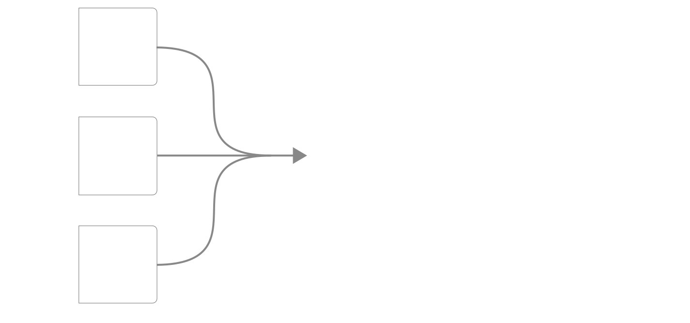
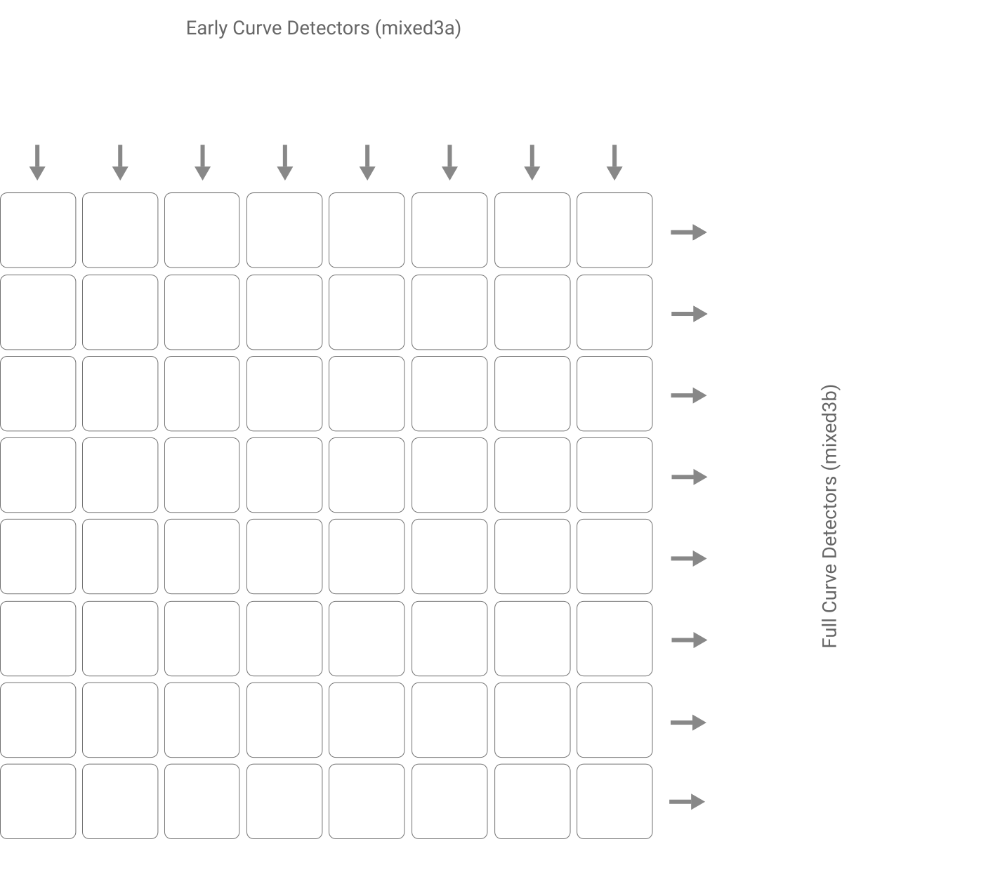
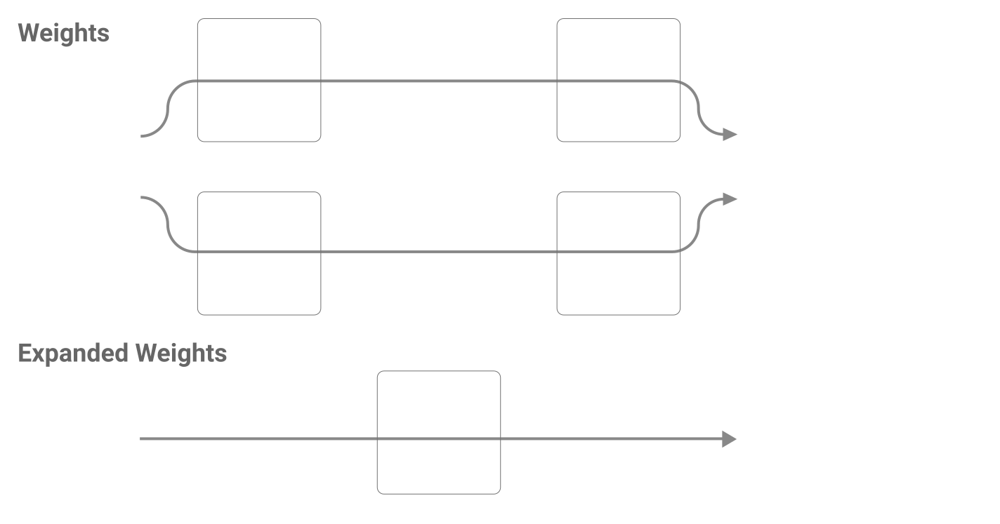
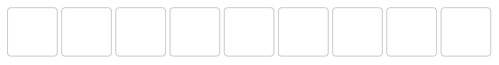

本文是 线程：电路 的一部分，该系列以实验性形式汇集了受邀的短文和批判性评论，深入探讨神经网络的内部工作机制。
曲线电路
分支特化
引言
理解神经网络的问题，有点像逆向工程一个大型已编译的计算机程序。在这个比喻中，神经网络的权重就是编译后的汇编指令。归根结底，权重才是你最终想要理解的核心：这一系列卷积和矩阵乘法究竟是如何产生模型行为的？
理解人工神经网络也与神经科学有许多共通之处，后者试图理解生物神经网络。正如你所知，现代神经科学的一个主要努力是绘制生物神经网络的 connectomes：哪些神经元与哪些神经元相连。然而，这些连接只能告诉神经科学家哪些权重非零。而获取实际的权重——知道一个连接是兴奋还是抑制，以及强度如何——将是一个重大的进一步突破。可以想象，神经科学家们可能会不惜一切代价，来获得我们研究人工神经网络的人免费就能拿到的权重信息。
因此，我们实际给予神经网络权重观察的关注如此之少，就显得相当令人惊讶。当然，也存在一些例外。研究者们常常展示视觉模型第一层权重的图像（因为它们直接连接到 RGB 通道，所以很容易理解为图像）。在一些工作中，尤其是早期，我们会看到研究者手动推理解释小型神经网络的权重。我们也经常看到研究者讨论权重的聚合统计数据。但真正去观察除第一层之外的神经网络权重却相当罕见——据我们所知，将隐藏层之间的权重映射到有意义的算法，这是 circuits 项目首次提出的工作。
[交互式图表 — 查看原文：https://distill.pub/2020/circuits/visualizing-weights]
可视化激活、权重和归因之间有什么区别？
在本文中，我们重点讨论权重的可视化。但人们也经常可视化激活、归因、梯度以及更多内容。我们应该如何理解可视化这些不同对象各自的意义呢？
为什么研究隐藏层权重并非易事
在我们看来，理解神经网络权重存在三个主要障碍，这可能导致研究者倾向于不直接检查它们：
我们将用来解决这些问题的方法，很多此前已在 可解释性的基本构建块 中针对理解激活向量进行过探讨。本文的目标是展示如何将类似的思想应用于权重而非激活。当然，我们已经在各种电路文章中隐含地使用过这些方法，但在那些文章中，这些方法是次要于研究结果的。专门讨论这些方法似乎很有价值。
题外话：一个简单技巧
可解释性方法常常因为难以使用而未能普及。因此，在深入复杂方法之前，我们想先提供一个简单、易于应用的方法。
在卷积网络中，给定神经元的输入权重形状为 [width, height, input_channels]。除非这是第一个卷积层，否则由于 input_channels 通常很大，很难直接可视化。（如果是第一层卷积，则直接按原样可视化！）不过，我们可以使用降维方法将 input_channels 压缩到 3 个维度。我们发现单侧 NMF 在这方面特别有效。

这个可视化虽然不能告诉你权重在更大模型上下文中的具体作用，但它能显示出神经元正在学习良好的空间结构。这可以作为一个简单的 sanity check，确认你的神经元正在学习，也是理解神经元行为的第一步。我们后面也会看到，这种因子分解权重的通用方法可以进一步扩展为研究神经元的强大工具。
尽管缺乏上下文，单侧 NMF 仍然是一种能一次性考察多个通道的绝佳技术。使用这个方法你可能很快就会发现：在卷积层末尾使用全局平均池化的模型中，最后几层的权重往往都是水平条带。

我们将这种现象称为 权重条带化。单侧 NMF 可以快速测试和验证关于权重条带等现象的假设。
使用特征可视化赋予权重上下文
当然，孤立地看权重并没有太大意思。为了真正理解发生了什么，我们需要将权重置于网络的更广阔背景中。上下文问题是在理解神经网络时反复出现的挑战：我们能轻松观测到每一个激活、每一个权重和每一个梯度，难点在于搞清楚这些数值到底代表什么。
回想一下，两个卷积层之间的权重是一个四维数组，其形状为：
[相对 x 位置, 相对 y 位置, 输入通道, 输出通道]
如果我们固定输入通道和输出通道，就能得到一个可以用传统数据可视化方式呈现的二维数组。假设我们已经知道想要理解哪个神经元，因此确定了输出通道。我们可以挑选那些对输出通道具有较大权重幅值的输入通道。
但输入代表什么？输出又代表什么？
关键技巧在于，特征可视化（或对神经元的更深入研究）可以帮助我们理解输入和输出神经元所代表的含义，从而为整个图表提供上下文。特征可视化特别吸引人，因为它是自动化的，并且能生成一张通常极具信息量的图像。因此，我们在权重图中常常用特征可视化图像来代表神经元。
这种方法是权重版本的“使用特征可视化赋予激活向量上下文”，对应 可解释性的基本构建块 中“理解隐藏层”一节的内容。
这就好比在逆向工程一个普通的已编译程序时，需要开始给寄存器中存储的值赋予变量名，以便跟踪它们。特征可视化本质上就是给神经元自动生成的变量名，而神经元大致类似于那些寄存器或变量。
小 multiples（Small Multiples）
当然，神经元有多个输入，将多个输入的权重同时以 small multiple 的形式展示出来往往很有帮助：

如果我们有两组相关的神经元在相互交互，有时甚至可以将它们之间的所有权重以小 multiples 网格的形式展示出来：

使用特征可视化进行上下文化的进阶方法
虽然我们最常使用特征可视化来可视化单个神经元，但实际上我们可以可视化任何一个方向（即神经元的线性组合）。这为权重可视化打开了一个非常广阔的空间，下面我们将探讨其中几个特别有用的方法。
可视化空间位置权重
回想一下，单个神经元的权重形状为 [width, height, input_channels]。上一节我们将 input_channels 分开，分别可视化每个 [width, height] 矩阵。但另一种方法是认为每个空间位置上都存在一个关于输入神经元的向量，然后对每个这样的向量应用特征可视化。你可以将其理解为：它告诉我们该位置的权重整体上在寻找什么。

这个可视化是 Building Blocks 中 可解释性的基本构建块 的权重版本。它能以高信息密度的方式概览单个神经元的权重在做什么。然而，它无法捕捉一个位置对多个非常不同事物做出响应的情形，比如多面性或多义性神经元。
可视化权重因子
特征可视化也可以应用于权重的因子分解，这一点我们在前面简要讨论过。这是 Building Blocks 中“神经元组”可视化的权重版本。
当你有一组神经元（如 高低频检测器 或黑白 vs 彩色检测器），它们大多只在寻找少量因子时，这种方法特别有用。例如，大量的高低频检测器可以被理解为以不同模式组合两个因子——一个高频因子和一个低频因子。

这些因子随后可以进一步分解为单个神经元，以便进行更细致的理解。

处理间接交互
正如我们之前提到的，有意义的权重交互有时发生在神经网络中并非字面相邻的神经元之间，或者权重并未直接体现在单个权重张量中。以下是一些例子：
因此，我们经常使用“展开权重”——即相邻权重矩阵相乘的结果，可能忽略非线性。我们通常通过对模型求梯度来实现展开权重，将所有非线性操作忽略或替换为最接近的线性操作。
这些展开权重具有以下性质：
它们还有一个额外的好处，这更多是实现细节：因为它们是通过梯度实现的，所以你不需要知道权重是如何在模型中表示的。例如，在 TensorFlow 中，你不需要知道哪个变量对象代表权重。当你在处理不熟悉的模型时，这会带来极大的便利！
展开权重的优势
将权重这样展开有时能帮助我们看到更简单的底层结构。例如，mixed3b208 是一个黑白中心检测器。它是通过组合多个黑白 vs 彩色检测器构建而成的。
展开权重让我们看到这些连接的一个重要聚合效应：它们共同寻找的是再往前一层的中心区域缺乏彩色的特征。
这种方法一个特别重要的用途——我们在之前的例子中已经隐含使用过——是跳过“瓶颈层”。瓶颈层是指将通道数大幅压缩（通常在分支中）的网络层，从而使后续的大空间卷积计算成本更低。InceptionV1 的 瓶颈层 就是一个例子。由于大量信息被压缩，这些层往往是多义性的，因此跳过它们并理解与之前更宽广层之间的连接通常会更有帮助。
展开权重可能产生误导的情况
当然，当非线性结构很重要时，展开权重可能会产生误导。一个很好的例子是 InceptionV1早期视觉概览。回想一下，边界检测器通常同时检测从低频到高频和从高频到低频的转变：
由于高低频检测器 在一侧被高频模式激发而在另一侧被抑制（低频则相反），同时检测两个方向会导致展开权重相互抵消！因此，展开权重看起来显示边界检测器既不受两层之前的那些高频检测器激发，也不受其抑制，而实际上它们既受高频激发也受高频抑制，只是取决于具体上下文，且这两种情况相互抵消了。高低频检测器

描述多层交互的更复杂技术可以帮助我们理解这类情况。例如，我们可以确定两个神经元之间“最佳情况”的激发交互（即它们之间能达到的最大梯度）。或者你可以观察特定样本的梯度。或者你可以对许多样本的梯度进行因子分解，以确定主要可能的情况。这些都是有用的技术，但我们将把它们留到未来的文章中讨论。
定性特性
在结束对展开权重的讨论之前，有一个跨越多层的展开权重的定性特性值得一提。展开权重常常会呈现出类似“电子轨道”般的平滑空间结构：

目前尚不清楚如何解释这一现象，但它暗示着在多层尺度上存在丰富的空间结构。
维度与规模
到目前为止，我们已经解决了上下文化和间接交互的挑战。但对于第三个挑战——维度与规模——我们只给予了少量关注。神经网络包含许多神经元，每个神经元又连接到许多其他神经元，产生了海量的权重。我们如何挑选哪些神经元之间的连接来观察呢？
在本文中，我们将“想研究哪些神经元”这个问题放在讨论范围之外，只讨论挑选哪些连接来研究的问题。（我们可能试图全面研究一个模型，这时需要研究所有神经元。但也可能，例如，我们只想研究那些与模型行为某个更窄方面相关的神经元。）
一般来说，我们选择观察幅度最大的权重，就像我们在上下文化那一节开头所做的那样。不幸的是，通常存在大量小权重构成的长尾，在某个点之后继续观察它们通常变得不切实际。这些小权重里究竟隐藏着多少重要信息？我们不知道，但多义性神经元表明这里可能隐藏着非常重要且微妙的故事！有人希望稀疏神经网络能通过消除小权重来大大改善这个问题，但是否能将这类结论推广到非稀疏网络，目前仍是推测性的。
我们曾经简要提及的另一种策略是将权重降维成几个成分，然后研究这些因子（例如使用 NMF）。通常，极少数的成分就能解释大部分方差。事实上，有时少量因子就能解释一整组神经元的权重！显著的例子包括高低频检测器（我们之前已经看到过）和黑白 vs 彩色检测器。
然而，这种方法也有缺点。首先，这些成分可能更难理解，甚至可能是多义性的。例如，如果你对一个边界检测器应用这个方法的基本版本，其中一个成分会同时包含高到低频和低到高频的检测器，这会使其难以分析。其次，你的因子不再与激活函数对齐，这会让分析变得更加混乱。最后，因为你将在一个不同的基底下对每个神经元进行推理，所以除非你把成分转换回神经元，否则很难构建关于模型的全局视角。
本文是 线程：电路 的一部分，该系列以实验性形式汇集了受邀的短文和批判性评论，深入探讨神经网络的内部工作机制。
曲线电路
分支特化